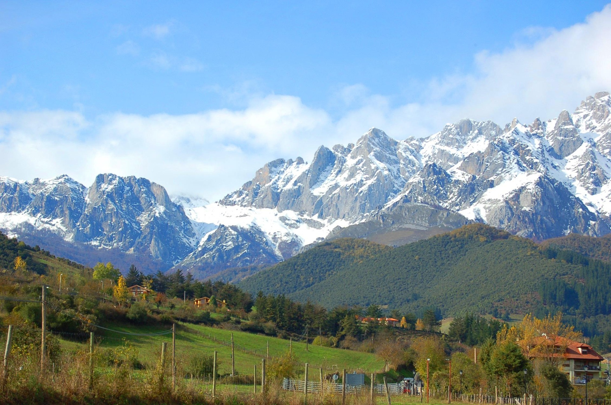
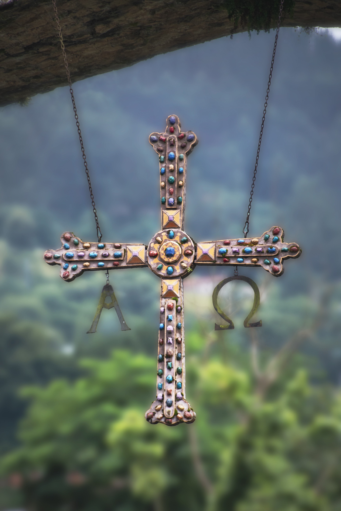

¨Fui a los bosques porque quería vivir deliberadamente; enfrentar solo los hechos esenciales de la vida y ver si podía aprender lo que ella tenía que enseñar, y no descubrir, cuando llegara el momento de morir, que no había vivido.
Henry David Thoreau"
Nuestra Asturias

Asturias según el National Geografic
Desde nuestro centro educativo, através de la materia de proyecto de emprendimiento social o empresarial, se va a lanzar un proyecto desafiante. La creacción de un club de montaña federado, para enriquecimiento de toda la comunidad educativa y ciudadanía de nuestro barrio.
Pertencemos a un Principado con una extraordinaria natualeza, llena de belleza y mitología. Unos paisajes increíbles que atesoran historia y riqueza cultural. Es nuestro deseo aprovechar el contacto con esta maravillosa naturaleza para fomentar hábitos saludables, conciencia mediambiental y conocimiento de nuestra cultura y folklore. Convertir el contacto con la naturaleza en un estilo de vida.
Aquí tienes un reportaje en la Web de National Geográfic con la descripción de algunos de los principales atractivos de Asturias.
Desde 3º B ESO, llevaremos a cabo el desafío de crear un club de montaña federado a través de los siguientes pasos:
ESTRUCTURA DE NUESTRO PROYECTO DE CLUB DE MONTAÑA Y SENDERISMO
Primeros pasos
Elaborar infografía y blog del club de montaña.
Elaborar un podcast
Redactar una encuesta y registro de interesadosSiguientes pasos
Conseguir equipamiento distintivo.
Folleto informativo
Realizar escape-room o juego
Final
Presentación final del club de montaña con la oferta de tres rutas de senderismo para el curso 2027/28